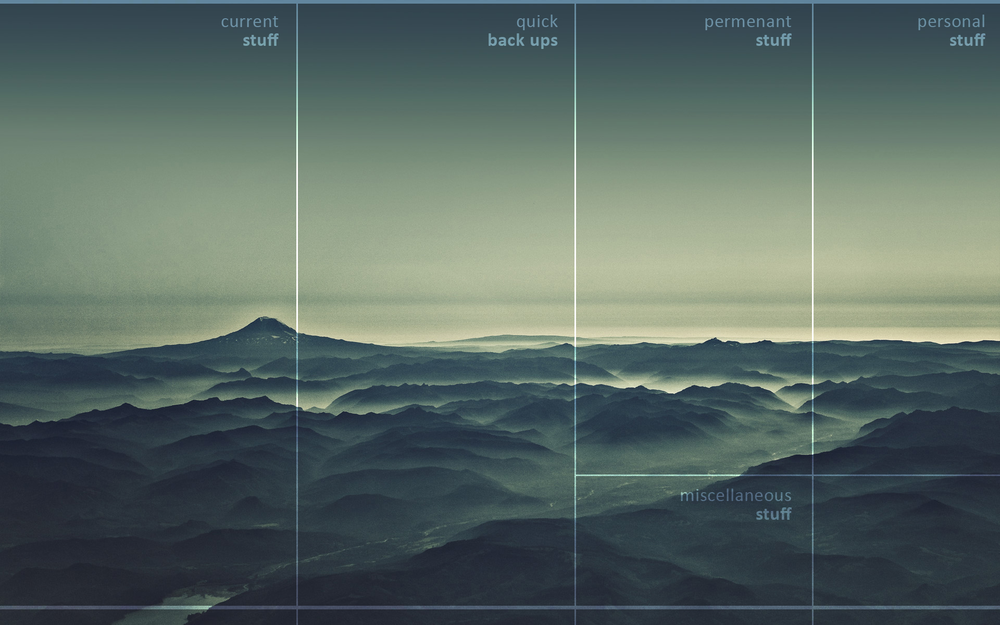

Det är en platshållare.
next pollen templates will be created.
Så detta är en prototyp av min webbplats.
Yggdrasil har tre rötter. Den första går till människornas (Midgård) och gudarnas hemvist (Asgård), den andra till jättarnas hemvist (Jotunheim eller Utgård) och den tredje till underjorden (Nifelheim), på trädets norra sida.
this document illusitrites the principle of the project: Eirprogrammet (pdf)
In this example, we use CSS to create a modal (dialog box) that is hidden by default.
We use JavaScript to trigger the modal and to display the current image inside the modal when it is clicked on. Also note that we use the value from the image's "alt" attribute as an image caption text inside the modal.
Det är en platshållare.
Det är en platshållare.
next pollen templates will be created.